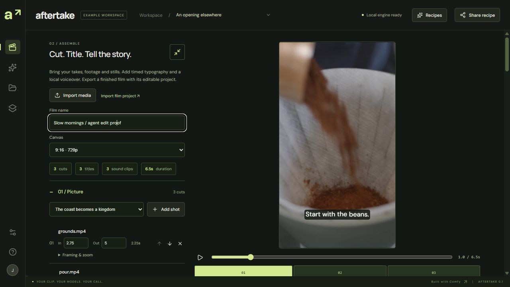

Your brief.
An editable cut.
An agent can inspect footage, measure a local voiceover, pair every line with its picture, and export through Aftertake. The cuts, captions and complete voice clips stay editable in the same Film project.
Inspect the useful action.
Decoded source frames guide the trim. This coffee edit starts where the grounds enter the filter.
Keep the whole line.
Local Kokoro voices are measured first. A beat with too little picture is rejected. Captions default to the actual spoken script.
The same export. The same project.
Persistent export keys rejoin a recorded job after agent reconnection. The finished file returns decoded frames and audio diagnostics for review.
6.5 seconds · 720 × 1280 · 24 fps. Three cuts, three editable titles, three whole local voice clips. Licensed footage, edited through the real local MCP and native Film renderer.
The edit comes back to your desk.
Import the agent's saved project into Film assembly and change its words, timing or footage. This is the actual native editor with the MCP project loaded.

The local interface now exposes twenty-six typed MCP tools, including native image, frame-edit and video generation, plus optional local script drafts. See the actual generated product reference, camera take and narrated export ↗, or review a brief-assisted cut ↗. Your chosen agent controls the edit. A fresh CPU-only run completed this coffee editing flow with Comfy endpoints unavailable; new generation requires the local Comfy engine.
This public page plays recorded evidence. Running the MCP interface requires the local studio; this page accepts no media or agent requests. Measured scope and checks.
Footage: Michael Burrows / Pexels, under the Pexels License. Generic local Kokoro narration; no music or identity cloning. Fictional coffee concept, with no affiliation, endorsement or real offer. Model and source licenses apply separately. App code is MIT.